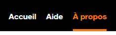
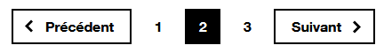
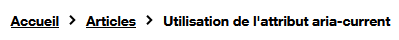

Utilisation de l'attribut aria-current
Thématiques associées :- Web
- Intermédiaire
Date de parution
Introduction #
L'attribut aria-current sert à indiquer (au niveau du code) l'élément courant dans un ensemble d'éléments.
Pour faire simple, prenons l'exemple d'un menu de navigation. L'élément courant est généralement mis en évidence par un effet visuel. Pour que cette mise en évidence soit également perçue par les utilisateurs qui utilisent un lecteur d'écran (ou un outil d'assistance quel qu'il soit), il est indispensable de marquer l'élément au niveau code en utilisant l'attribut aria-current.
Utilisation #
Pour indiquer l'élément en cours dans un ensemble d'éléments, il suffit d'ajouter un attribut aria-current au niveau du code HTML. Dans l'exemple ci-dessous, on utilise la valeur générique true :
<ul>
<li>élément 1</li>
<li aria-current="true">élément 2</li>
<li>élément 3</li>
<ul>
Le second élément de cette liste sera par exemple vocalisé "en cours, élément 2" par le lecteur d'écran NVDA.
Liste des différents usages #
L'attribut aria-current accepte les valeurs suivantes : true, page, step, location, date, time et false.
true: indique l'élément en cours dans un ensemble d'élémentspage: indique la page en cours dans un ensemble de pagesstep: indique l'étape en courslocation: indique l'élément en cours dans un diagrammedate: indique la date courante dans un ensemble de datetime: indique l'heure en coursfalse(valeur par défaut) : n'a pas d'effet
Quelques exemples d'usages courants #
Exemples 1 : menu de navigation #
Utiliser la valeur page pour indiquer la page courante dans un ensemble de pages.

<nav aria-label="Navigation principale">
<ul>
<li>
<a href="/fr/">Accueil</a>
</li>
<li>
<a href="/fr/aide/">Aide</a>
</li>
<li>
<a href="/fr/a-propos/" aria-current="page">À propos</a>
</li>
</ul>
Exemples 2 : système de pagination #
Utiliser la valeur page pour indiquer la page en cours de consultation dans un système de pagination :

<ol>
<li aria-label="page 1">1</li>
<li aria-label="page 2" aria-current="page">2</li>
<li aria-label="page 3">3</li>
</ol>
Exemples 3 : fil d'Ariane #
Utiliser la valeur page pour indiquer la page en cours dans un fil d'Ariane :

<ol>
<li><a href="...">Accueil</a></li>
<li><a href="...">Articles</a></li>
<li aria-current="page">Utilisation de l'attribut aria-current</li>
</ol>
Exemples 4 : processus à étapes #
Utiliser la valeur step pour indiquer l'étape en cours dans un processus à étapes en plusieurs page.

<ol>
<li>Label n°1</li>
<li>Label n°2</li>
<li aria-current="step">Label n°3</li>
<li>Label n°4</li>
<li>Label n°5</li>
</ol>
Exemple 5 : sélection d'une date #
Utiliser la valeur date dans un composant permettant de sélectionner une date. Un attribut aria-current="date" est positionné sur la date du jours tandis qu'un attribut aria-selected="true" est positionné sur la date en cours de sélection.